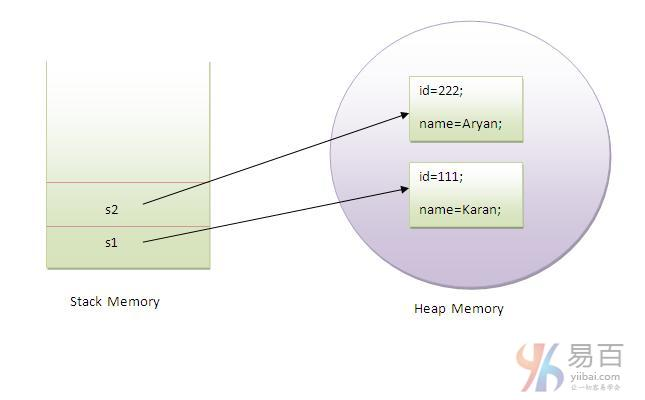

☰ 目录
21 Java 对象 和 类
1- 五大创造对象的方法
- 通过
new关键字
- 通过
newInstance()方法
- 通过
clone()方法
- 通过反序列化
- 通过工厂方法等
2- 匿名对象: 【只使用一次的对象】
new Calculation().fact(5);
3- 同时创建多个同类的对象
Rectangle r1=new Rectangle(), r2=new Rectangle();//creating two objects
4-
原文： https://www.yiibai.com/java/object-and-class-in-java.html
在本节教程中，我们将学习Java对象和类。在面向对象编程技术中，需要设计和使用对象和类的程序。对象是物理和逻辑实体，而类是逻辑实体。
提醒：对于Java初学者来说，对象和类是一个十分重要的概念，能否理解和掌握对之后其他Java知识有直接影响。所以，虽然本节的内容比较多，但建议认真阅读并理解，最好能结合手动实现本节中的所有示例代码。
1. Java中的对象
具有状态和行为的实体可称为对象(女朋友也可以叫对象)。 椅子，自行车，标记，笔，桌子，汽车等。它可以是物理或逻辑(有形和无形)。 无形对象的例子是银行系统。
一个对象有三个特点：
- 状态： 表示一个对象的数据(值)。
- 行为： 表示对象的行为(功能)，例如：存款，取款等。
- 标识： 对象标识通常通过唯一ID实现。该
ID的值对外部用户不可见。 但是，它由JVM内部使用来唯一地标识每个对象。
例如： 汽车是一个对象。它的名字是：捷达，颜色是白色等这些就是它的状态(数据值)。它用于跑路，所以跑路就是它的行为。
对象是类的一个实例。 类是创建对象的模板或蓝图。 所以对象是一个类的实例。
对象定义：
- 对象是一个现实世界的实体。
- 对象是一个运行时实体。
- 对象是具有状态和行为的实体。
- 对象是类的一个实例。
2. Java中的类
类是具有共同属性的一组对象。它是创建对象的模板或蓝图。它是一个逻辑实体。 它不能是物理存在的实体。
Java中的类可以包含：
声明一个类的语法：
class <class_name>{
field;
method;
}
2.1. Java中的实例变量
实例变量在类内部，但在方法外部定义的变量称为实例变量。 实例变量在编译时不获取内存。 它在运行时获取对象(实例)创建时的内存。 这是为什么，它被称为实例变量。
2.2. Java中的方法
在java中的方法类似函数，用于暴露对象的行为。
方法的优点
2.3. Java中的new关键字
new关键字用于在运行时分配内存。所有对象在堆内存区域中获取内存。
2.4. 对象和类示例： main方法和类
在这个例子中，我们创建了一个有两个数据成员:id和name的Student类。并通过使用new关键字创建Student类的对象，并打印对象的值。
这里，在类中创建main()方法。Student.java 类文件的代码如下 -
class Student {
int id;// field or data member or instance variable
String name;
public static void main(String args[]) {
Student s1 = new Student();// creating an object of Student
System.out.println(s1.id);// accessing member through reference variable
System.out.println(s1.name);
}
}
上面代码执行结果如下 -
0
null
2.5. 对象和类示例：main方法在类外部
在真实的开发中，我们一般创建类并从另一个类中使用它。这是比上面的在同一个类中更好的方法。 让我们来看一个简单的例子，在另一个类中有main()方法创建其它类。
在不同的java文件或单个java文件中有多个类。 如果在单个java源文件中定义多个类，则最好使用带有main()方法的类名作为保存的文件名。下面来看一个名称为 TestStudent1.java 的文件中的代码：
class Student {
int id;
String name;
}
class TestStudent1 {
public static void main(String args[]) {
Student s1 = new Student();
System.out.println(s1.id);
System.out.println(s1.name);
}
}
执行上面代码，得到以下结果 -
0
null
3. 初始化对象
在java中初始化对象有3种方式，它们分别如下 -
- 通过引用变量初始化对象
- 通过方法初始化对象
- 通过构造函数初始化对象
3.1. 通过引用变量初始化对象
初始化对象仅仅是将数据初步地存储到对象中。下面来看看一个简单的例子，通过引用变量初始化对象。这里创建一个 TestStudent2.java 类文件，代码如下：
class Student {
int id;
String name;
}
class TestStudent2 {
public static void main(String args[]) {
Student s1 = new Student();
s1.id = 101;
s1.name = "Sonoo";
System.out.println(s1.id + " " + s1.name);// printing members with a
// white space
}
}
上面代码输出结果如下 -
101 Sonoo
还可以通过引用变量创建多个对象并存储信息在这些对象。这里创建一个 TestStudent3.java 类文件，代码如下：
class Student {
int id;
String name;
}
class TestStudent3 {
public static void main(String args[]) {
// Creating objects
Student s1 = new Student();
Student s2 = new Student();
// Initializing objects
s1.id = 101;
s1.name = "Sonoo";
s2.id = 102;
s2.name = "Amit";
// Printing data
System.out.println(s1.id + " " + s1.name);
System.out.println(s2.id + " " + s2.name);
}
}
上面代码输出结果如下 -
101 Sonoo
102 Amit
3.2. 通过方法初始化对象
在本示例中，将创建Student类的两个对象，并通过调用insertRecord方法来初始化这些对象的值。并通过调用displayInformation()方法显示对象的状态(数据)。这里创建一个 TestStudent4.java 类文件，代码如下：
class Student {
int rollno;
String name;
void insertRecord(int r, String n) {
rollno = r;
name = n;
}
void displayInformation() {
System.out.println(rollno + " " + name);
}
}
class TestStudent4 {
public static void main(String args[]) {
Student s1 = new Student();
Student s2 = new Student();
s1.insertRecord(111, "Karan");
s2.insertRecord(222, "Aryan");
s1.displayInformation();
s2.displayInformation();
}
}
执行上面代码，得到如下结果 -
111 Karan
222 Aryan
创建对象的示意如下 -

从上图可以看出，对象在堆内存区域获取内存。 引用变量指的是在堆内存区域中分配的对象。 这里，s1和s2都是引用存储器中分配的对象的引用变量。
3.3. 通过构造函数初始化对象
有关于通过构造函数初始化对象，我们将在后面的Java构造函数中学习。
3.3.1. 对象和类示例：Employee
下面我们来看看一个例子，实现维护员工信息的记录。这里创建一个 TestEmployee.java 类文件，代码如下所示 -
class Employee {
int id;
String name;
float salary;
void insert(int i, String n, float s) {
id = i;
name = n;
salary = s;
}
void display() {
System.out.println(id + " " + name + " " + salary);
}
}
public class TestEmployee {
public static void main(String[] args) {
Employee e1 = new Employee();
Employee e2 = new Employee();
Employee e3 = new Employee();
e1.insert(101, "ajeet", 45000);
e2.insert(102, "irfan", 25000);
e3.insert(103, "nakul", 55000);
e1.display();
e2.display();
e3.display();
}
}
上面代码执行得到结果如下 -
101 ajeet 45000.0
102 irfan 25000.0
103 nakul 55000.0
3.3.2. 对象和类示例：Rectangle
还有另一个维护Rectangle类记录的例子。这里创建一个 TestRectangle1.java 类文件，代码如下所示 -
class Rectangle {
int length;
int width;
void insert(int l, int w) {
length = l;
width = w;
}
void calculateArea() {
System.out.println(length * width);
}
}
class TestRectangle1 {
public static void main(String args[]) {
Rectangle r1 = new Rectangle();
Rectangle r2 = new Rectangle();
r1.insert(11, 5);
r2.insert(3, 15);
r1.calculateArea();
r2.calculateArea();
}
}
上面代码执行得到结果如下 -
55
45
在Java中创建对象的不同方法有哪些？
在java中有很多方法可以用来创建对象。它们分别是：
五大创造对象的方法
- 通过
new关键字
- 通过
newInstance()方法
- 通过
clone()方法
- 通过反序列化
- 通过工厂方法等
在接下来的章节中，将学习这些方法用来创建对象。
匿名对象
匿名只是表示没有名。没有引用的对象(也就是不使用实例变量)称为匿名对象。它只能在创建对象时使用。如果只需要使用一个对象，匿名对象是一个很好的方法。 例如：
new Calculation();//匿名对象
Calculation c = new Calculation();// 使用实例变量，所以不是匿名对象
调用方法通过引用：
Calculation c = new Calculation();
c.fact(5);
通过匿名对象调用方法：
new Calculation().fact(5);
下面来看看java中的匿名对象的完整示例。
class Calculation {
void fact(int n) {
int fact = 1;
for (int i = 1; i <= n; i++) {
fact = fact * i;
}
System.out.println("factorial is " + fact);
}
public static void main(String args[]) {
new Calculation().fact(5);// calling method with anonymous object
}
}
上面代码执行得到结果如下 -
Factorial is 120
仅创建同个类型的多个对象
可以按照一种类型创建多个对象，就像在原始数据类型中的情况中一样。
原始变量的初始化：
int a=10, b=20;
引用变量的初始化：
Rectangle r1=new Rectangle(), r2=new Rectangle();//creating two objects
下面再看看一个例子：
class Rectangle {
int length;
int width;
void insert(int l, int w) {
length = l;
width = w;
}
void calculateArea() {
System.out.println(length * width);
}
}
class TestRectangle2 {
public static void main(String args[]) {
Rectangle r1 = new Rectangle(), r2 = new Rectangle();// creating two
// objects
r1.insert(11, 5);
r2.insert(3, 15);
r1.calculateArea();
r2.calculateArea();
}
}
上面代码执行得到结果如下 -
55
45
真实的应用示例: Account
在本节的最后部分，我们来看看一个真实应用中的示例，模拟银行账户转帐的实现。这里创建一个 TestAccount.java 类文件，代码如下所示 -
class Account {
int acc_no;
String name;
float amount;
void insert(int a, String n, float amt) {
acc_no = a;
name = n;
amount = amt;
}
void deposit(float amt) {
amount = amount + amt;
System.out.println(amt + " deposited");
}
void withdraw(float amt) {
if (amount < amt) {
System.out.println("Insufficient Balance");
} else {
amount = amount - amt;
System.out.println(amt + " withdrawn");
}
}
void checkBalance() {
System.out.println("Balance is: " + amount);
}
void display() {
System.out.println(acc_no + " " + name + " " + amount);
}
}
class TestAccount { /// 主类，居然可以不用public
public static void main(String[] args) {
Account a1 = new Account();
a1.insert(832345, "Ankit", 1000);
a1.display();
a1.checkBalance();
a1.deposit(40000);
a1.checkBalance();
a1.withdraw(15000);
a1.checkBalance();
}
}
上面代码执行得到结果如下 -
832345 Ankit 1000.0
Balance is: 1000.0
40000.0 deposited
Balance is: 41000.0
15000.0 withdrawn
Balance is: 26000.0